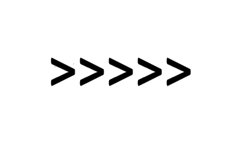

<!DOCTYPE html>
<html>
  <head>
    <script src="docs-demo-timeline.js"></script>
    <script src="https://unpkg.com/jspsych@7.3.4"></script>
    <script src="https://unpkg.com/@jspsych/plugin-preload@1.1.3"></script>
    <script src="https://unpkg.com/@jspsych/plugin-html-button-response@1.2.0"></script>
    <script src="https://unpkg.com/@jspsych/plugin-instructions@1.1.4"></script>
    <link rel="stylesheet" href="https://unpkg.com/jspsych@7.3.4/css/jspsych.css" />
    <link rel="stylesheet" href="docs-demo.css" type="text/css">
  </head>
  <body></body>
  <script>

    const jsPsych = initJsPsych();

    const preload_trial = {
      type: jsPsychPreload,
      images: ['img/con2.png']
    }

    const trial = {
      type: jsPsychInstructions,
      pages: [
        'Welcome to the experiment. Click next to begin.',
        'You will be looking at images of arrows: ' +
        '<br>' +
        '</img>'
      ],
      show_clickable_nav: true
    };

    const timeline = [trial];

    if (typeof jsPsych !== "undefined") {
      jsPsych.run(generateDocsDemoTimeline(timeline, [preload_trial]));
    } else {
      document.body.innerHTML = '<div style="text-align:center; margin-top:50%; transform:translate(0,-50%);">You must be online to view the plugin demo.</div>';
    }
  </script>
</html>
